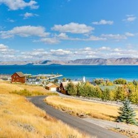

15 Best Things to Do in Preston (Idaho)
In Southeastern Idaho’s Cache Valley, Preston is a rural town with astounding mountain scenery on its doorstep.
On the eastern flank are the Bear River Mountains, and in a few minutes flat you can be fishing at a crystal clear lake or hiking in an alpine meadow.
Franklin, Idaho’s oldest European settlement is on Preston’s outskirts and is a starting point for an historic byway, connecting a long chain of sites relating to the region’s Native American past, pioneer days and the Oregon Trail, which passed by the Cache Valley to the north.
As the Franklin County Seat, Preston hosts some major events at the fairground on the west side of town, and none are bigger than That Famous Preston Night Rodeo, which is celebrated with three days of carnival amusements and parades.
- Pioneer Historic Byway
- Bear River Massacre Site
- Napoleon Dynamite Filming Locations
- Preston Park
- Franklin Relic Hall
- Glendale Reservoir
- Oneida Narrows Reservoir
- Oneida Stake Academy
- Willow Flat Springs Trail
- Preston Golf and Country Club
- Bear Lake
- That Famous Preston Night Rodeo
- Franklin County Fair
- Festival of Lights
- National Oregon/California Trail Center
For more info visit www.thecrazytourist.com